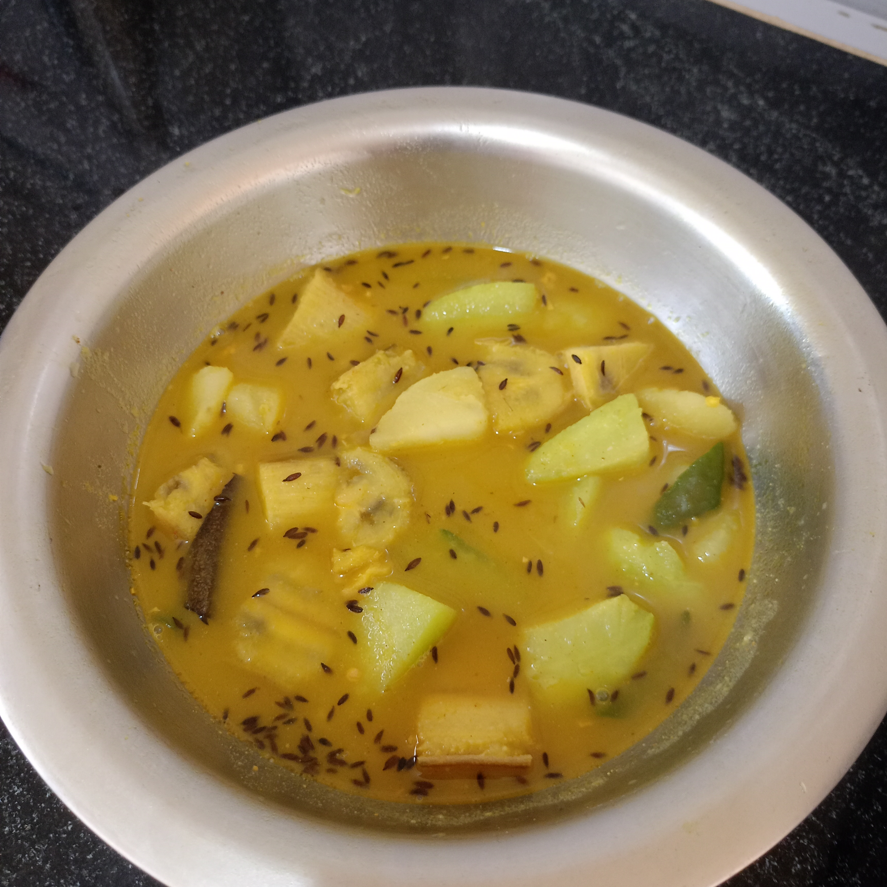
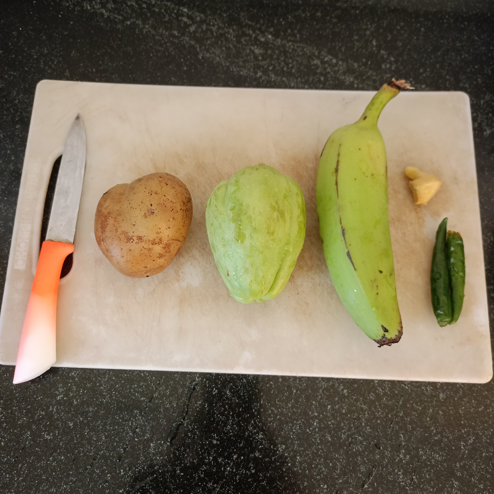
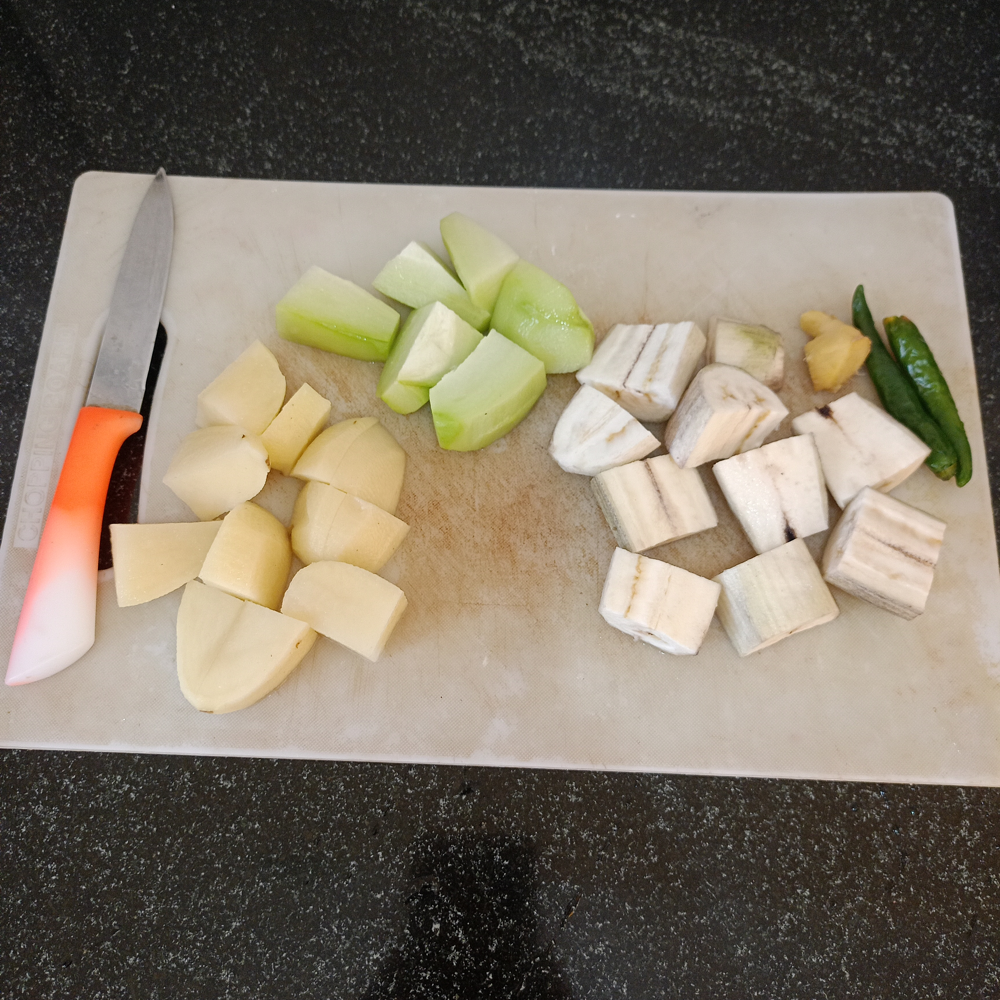

SPICELO STORY
Bengali-Style Potato, Raw Banana & Chayote Curry
Learn how to make a simple homemade Bengali-style vegetable curry with potato, raw banana, chayote and everyday spices. This easy recipe is prepared for two people and takes approximately 30 minutes.

The Story Behind This Dish
On the morning of November 18, 2026, my wife asked me to make a vegetable curry at home.
I remembered a small hotel in our village where I had seen this type of vegetable curry being prepared. I wanted to try making it myself, so I decided to cook it at home.
I prepared the vegetables, added simple spices and cooked the curry. This is how my homemade Potato, Raw Banana and Chayote Curry came together.
10 min
20 min
Easy
Ingredients for Potato, Raw Banana & Chayote Curry
For 2 persons
- 1 medium potato
- 1 raw banana
- 1 chayote (chow chow)
- A small piece of ginger
- Salt to taste
- ½ spoon turmeric powder
- ½ spoon cumin
- A small piece of bay leaf
- 2 green chillies
- 3 spoons oil
- ½ spoon coriander powder
- ½ spoon vegetable masala
- 1 glass water


🎬 Potato, Raw Banana & Chayote Curry Video
How to Make Potato, Raw Banana & Chayote Curry
- First, cut the potato, raw banana and chayote into pieces. Prepare the ginger and green chillies.
- Heat 3 spoons of oil in a kadai. Add cumin and a small piece of bay leaf.
- Add the raw banana and sauté for a few minutes.
- Add the potato and chayote to the kadai.
- Add salt, turmeric powder, chopped ginger, coriander powder and vegetable masala. Sauté for a few minutes.
- Add one glass of water and cover the kadai. Cook for 10 minutes.
- Continue cooking for another 10 minutes, until the vegetables are cooked and the curry is ready.
Total time: approximately 30 minutes.
Tips for Making Potato, Raw Banana & Chayote Curry
- Cut the vegetables into pieces before starting to cook.
- Sauté the raw banana for a few minutes before adding the other vegetables.
- Mix the spices with the vegetables before adding water.
- Keep the kadai covered while the vegetables cook.
- Check that the vegetables are cooked before serving.
Potato, Raw Banana & Chayote Curry FAQ
How many people does this recipe serve?
This recipe is prepared for approximately 2 people.
How long does this vegetable curry take to cook?
The total preparation and cooking time is approximately 30 minutes.
Which vegetables are used in this curry?
This curry uses potato, raw banana and chayote (chow chow).
How much water is added?
One glass of water is added during cooking.
My Food Note
This curry was inspired by a vegetable dish I had seen being prepared at a small hotel in our village. When my wife asked me to make a vegetable curry, I remembered that dish and decided to try making it at home.
💬 Comments